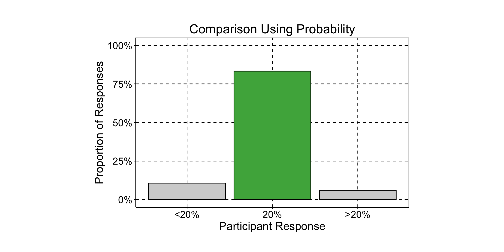
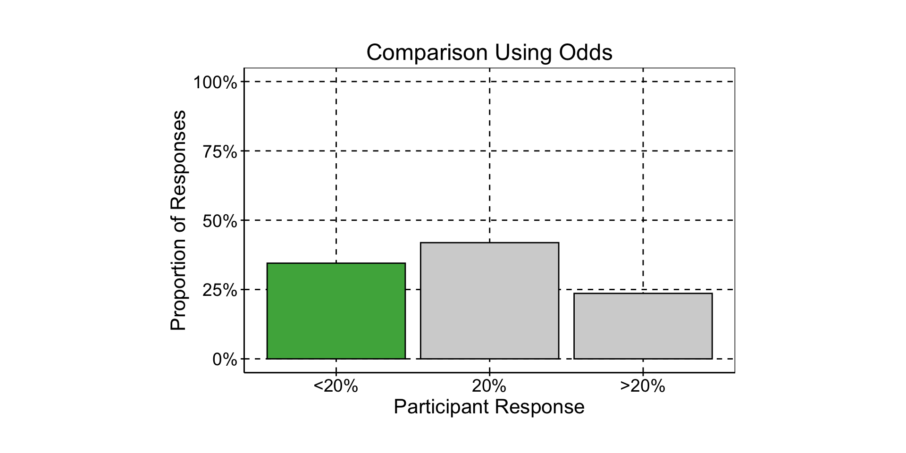

Using {marginaleffects} For Better Comparisons
or “Odds ratios? more like ‘Odd Ratios’!”
Demetri Pananos
July 12, 2024
Comparisons are Important
- I am 11, 207 Sols old
- To get here, I traveled 0.00002 AUs
Comparisons are Important
- I am
11, 207 Sols32 years old - To get here, I traveled
0.00002 AUs3, 200 Kms
Comparisons are Important
- I am
11, 207 Sols32 years old - To get here, I traveled
0.00002 AUs3, 200 Kms2, 000 Miles
- The way we talk about comparisons is important
- Applies to data science since regression creates comparisons
Odds are Hard to Interpret
- First Poll
- At Positconf::2024…
- The probability an engineer attends is 10%
- The probability a data scientist attends is twice as large.
- What is the probability a data scientist goes to Positconf::2024?
Odds are Hard to Interpret
- Second Poll
- At Positconf::2024…
- The probability an engineer attends is 10%
- The odds a data scientist attends is twice as large.
- What is the probability a data scientist goes to Positconf::2024?


Data Science Is Hard…
- Need to
- Communicate in years, not sols
- Create unbiased comparisons
- Tell a compelling story
- What do we use? How do we do that?
Use {marginaleffects}!
- Generate comparisons from over 100+ models using
avg_comparisons - Re-weight comparisons with
wtsargument - Plot using
plot_predictionsandplot_comparisons - Available for R and python!

Use {marginaleffects}!
By …
- Writing your comparison as a function
- Specifying the weights of the groups in your population, and
- Using
{marginaleffects}to handle estimates and plots
You can communicate to your audience in a way natural to them and tell a compelling story.
A True(ish) Story
A colleague came to me one day…
- ü§¨ Demetri, Help!
- ü§∑üèΩ‚Äç‚ôÇÔ∏è My PM wants ‚Äúlift‚Äù. Is this the lift?
# A tibble: 8 × 5
term estimate std.error statistic p.value
<chr> <dbl> <dbl> <dbl> <dbl>
1 (Intercept) 0.112 0.0187 -117. 0
2 treatmentTreatment 1.22 0.0255 7.84 4.36e- 15
3 deviceMobile 0.845 0.0742 -2.27 2.35e- 2
4 langNon-English 0.365 0.0455 -22.1 2.71e-108
5 treatmentTreatment:deviceMobile 0.316 0.132 -8.75 2.16e- 18
6 treatmentTreatment:langNon-English 0.440 0.0738 -11.1 8.13e- 29
7 deviceMobile:langNon-English 0.224 0.509 -2.94 3.25e- 3
8 treatmentTreatment:deviceMobile:langNon-English 10.5 0.647 3.63 2.82e- 4Write Your Comparison as a Function
\[ \operatorname{lift} = \frac{E[Y\mid \mbox{Treat}] - E[Y \mid \mbox{Control}]}{E[Y \mid \mbox{Control}]} \]
1. Write Your Comparison as a Function
# A tibble: 2 × 7
term device estimate std.error p.value conf.low conf.high
<chr> <chr> <dbl> <dbl> <dbl> <dbl> <dbl>
1 treatment Desktop 0.0909 0.0233 9.79e- 5 0.0452 0.137
2 treatment Mobile -0.568 0.0515 3.18e-28 -0.669 -0.467# A tibble: 4 × 8
term device lang estimate std.error p.value conf.low conf.high
<chr> <chr> <chr> <dbl> <dbl> <dbl> <dbl> <dbl>
1 treatment Desktop English 0.195 0.0272 6.96e-13 0.142 0.248
2 treatment Desktop Non-English -0.453 0.0368 8.64e-35 -0.525 -0.381
3 treatment Mobile English -0.592 0.0500 2.26e-32 -0.690 -0.494
4 treatment Mobile Non-English 0.770 1.10 4.85e- 1 -1.39 2.93 Take Away
- Write your comparison as a function
- Get the marginal comparison with
avg_comparisons() - Use the
by=argument to get comparison within groups
2. Weight Your Groups
- üëçüèæ Got it, lift of 5.5%
- One more thing…
- We decided to add mobile users near the end of the experiment.
- Weights are wrong! Do you know what this means?
2. Weight Your Groups
- This means comparisons are biased!
- Create a weighted comparison function, correct with
newdata=andwts=
# A tibble: 1 × 6
term estimate std.error p.value conf.low conf.high
<chr> <dbl> <dbl> <dbl> <dbl> <dbl>
1 treatment -0.140 0.0290 0.00000144 -0.197 -0.0830Take Away
- Bias can result from improper weighting of groups
- Specify the weights for each group in a dataframe
- Use a weighted comparison and
wtsto tellavg_comparisonswhat weights should be used.
3. Use {marginaleffects} to Handle Plots
- üòÆ‚Äçüí® Thanks! I need to make some plots.
{marginaleffects}can help with that too.plot_predictionscan plot model estimates!plot_comparisonscan plot comparisons!
3. Use {marginaleffects} to Handle Plots
ü§î
ggplot(aes(device, conversion, color=treatment)) + ... + facet_wrap(...)?- Sure, but don’t forget to weight the data
3. Use {marginaleffects} to Handle Plots
ü§Ø That was so easy
plot_predictionsreturns a ggplot object
3. Use {marginaleffects} to Handle Plots
- Can even plot groups with the
byargument
3. Use {marginaleffects} to Handle Plots
- And can plot lift using
plot_comparisons
Take Away
- Using
plot_comparisonsandplot_predictionsto help tell your story - Return a ggplot object, add your finishing touches
- Signature is very similar to
avg_comparisons.